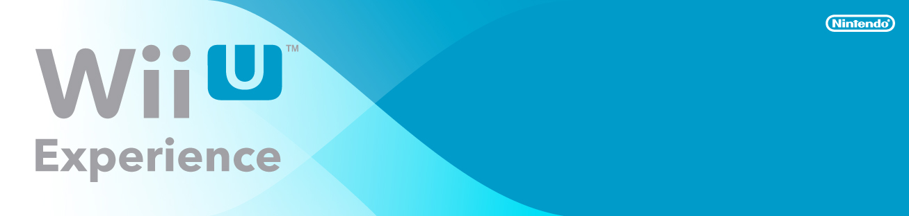

|  |
|
Wii U Experience FAQs
What happens if I don’t register before the event? Can I still get in? Due to limited space at the Wii U Experience registration is required for all guests. None of the available dates or times work for my schedule. Can I still register? Unfortunately, we are only able to accommodate guests during the dates/times listed on the registration page. What time should I arrive for check-in? Guests may begin check-in up to 10 minutes prior to their selected timeslot. What do I need at check in? One (1) form of identification (photo ID or passport) will be required at check-in. Can I bring my children? Yes, the Wii U Experience is happy to accommodate guests of all ages. Please indicate the number of children you plan to bring during registration. Can I transfer my invitation to someone else? No, invitations are strictly nontransferable. Why do you need my Facebook account information? Do I have to register my Facebook account? The Wii U Experience will feature interactive stations that allow you to instantly share personal photos and reactions with your friends on Facebook. Facebook registration is not required to attend the event. My registration code is not working. The registration code must match the original code sent to you in the invitation. If you have confirmed you are entering the correct code and are still receiving an error message, please contact XXXXX@dwinQ.com. My schedule has changed. Can I change or cancel my selected date/time after registration? If you would like to change or cancel your selected date/time, please contact XXXXX@dwinQ.com. I registered for the Wii U Experience, but didn’t receive the email to confirm my registration? What do I do now? Please allow up to 5 hours to receive the email. There is a chance your email program is mistaking our email for junk mail, so try checking in your Junk Mail or Trash folder. If you still haven't received the email, contact XXXXX@dwinQ.com. I am under the age of 13 and cannot register for the Wii U Experience. Why? Guests under the age of 13 must be registered for and accompanied to the event by their parent or guardian. Please ask them to access the registration site for you. |